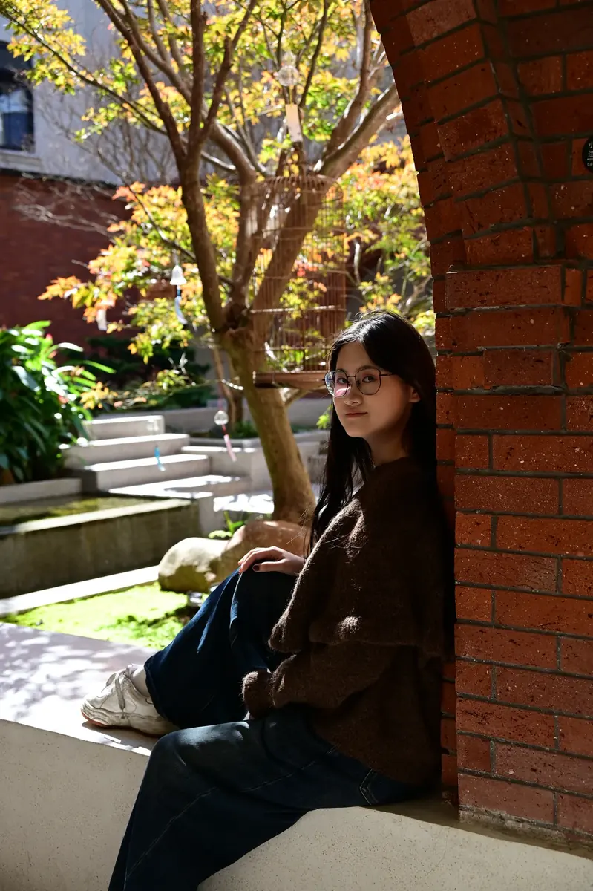

01
POSTCARD 01
@周芯亦
生日快乐生日快乐，有点遗憾没在高中和大一认识到你，但这一年的快乐，从各种小重奏到聚餐到排练的对视（I am watching u）弥补了所有。转眼我们都成老登了，祝你新的一年依旧热爱音乐和演奏，绩点也upupup🥳🥳
生日快乐生日快乐，有点遗憾没在高中和大一认识到你，但这一年的快乐，从各种小重奏到聚餐到排练的对视（I am watching u）弥补了所有。转眼我们都成老登了，祝你新的一年依旧热爱音乐和演奏，绩点也upupup🥳🥳

02祝我亲爱的卓首席生日快乐！！！🎂我们真是特别有缘分，相同专业、乐器、星座，就连生日都只差了两天呀😆非常幸运能在乐团遇见你这样真诚、善良且能交心的朋友！和你待在一起总是特别放心，感谢你总是不吝啬给予我很多的关心陪伴和帮助🥹也感谢你对乐团超出责任的用心，不管是排练结束后帮助同学们解决难点，还是每次认真详细的笔记，都让我特别感动！希望你新的一岁可以开心快乐，学业有成，万事顺意！！🥳🥳
卓欣怡：祝我爱的卓欣怡生日快乐🎂，在大西洋还是忘不了姚江边的晚风，回来再和你一起散步❤️祝新的一岁生活顺利，琴艺继续精进，回来再拉重奏^_^
弦起，便是星光。祝我们的小提琴首席生日快乐，永葆热爱，继续带领乐团演绎更多动人的乐章！